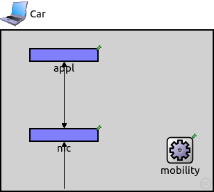
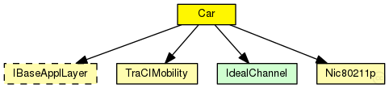
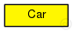

This documentation is released under the Creative Commons license
This documentation is released under the Creative Commons licenseTODO auto-generated type
The following diagram shows usage relationships between types. Unresolved types are missing from the diagram. Click here to see the full picture.
The following diagram shows inheritance relationships for this type. Unresolved types are missing from the diagram. Click here to see the full picture.
| Name | Type | Default value | Description |
|---|---|---|---|
| applicationModule | string |
| Name | Value | Description |
|---|---|---|
| display | i=device/laptop_l;bgb=304,230 |
| Name | Direction | Size | Description |
|---|---|---|---|
| radioIn | input |
gate for sendDirect |
| Name | Type | Default value | Description |
|---|---|---|---|
| appl.headerLength | int |
length of the application message header (in bits) |
|
| nic.phy80211p.coreDebug | bool | false |
debug switch for core framework |
| nic.phy80211p.recordStats | bool | false |
enable/disable tracking of statistics (eg. cOutvectors) |
| nic.phy80211p.headerLength | int | 46 bit |
defines the length of the phy header (/preamble) |
| nic.phy80211p.usePropagationDelay | bool |
Should transmission delay be simulated? |
|
| nic.phy80211p.thermalNoise | double |
the strength of the thermal noise [dBm] |
|
| nic.phy80211p.useThermalNoise | bool |
should thermal noise be considered? |
|
| nic.phy80211p.analogueModels | xml |
Specification of the analogue models to use and their parameters |
|
| nic.phy80211p.decider | xml |
Specification of the decider to use and its parameters |
|
| nic.phy80211p.sensitivity | double |
The sensitivity of the physical layer [dBm] |
|
| nic.phy80211p.maxTXPower | double |
The maximum transimission power of the physical layer [mW] |
|
| nic.phy80211p.timeRXToTX | double | 0 | |
| nic.phy80211p.timeRXToSleep | double | 0 |
Elapsed time to switch from receive to sleep state |
| nic.phy80211p.timeTXToRX | double | 0 |
Elapsed time to switch from send to receive state |
| nic.phy80211p.timeTXToSleep | double | 0 |
Elapsed time to switch from send to sleep state |
| nic.phy80211p.timeSleepToRX | double | 0 |
Elapsed time to switch from sleep to receive state |
| nic.phy80211p.timeSleepToTX | double | 0 |
Elapsed time to switch from sleep to send state |
| nic.phy80211p.initialRadioState | int | 0 |
State the radio is initially in (0=RX, 1=TX, 2=Sleep) |
| nic.phy80211p.radioMinAtt | double | 1.0 |
radios gain factor (attenuation) while receiving |
| nic.phy80211p.radioMaxAtt | double | 0.0 |
radios gain factor (attenuation) while not receiving |
| nic.phy80211p.nbRadioChannels | int | 1 |
Number of available radio channels. Defaults to single channel radio. |
| nic.phy80211p.initialRadioChannel | int | 0 |
Initial radio channel. |
| nic.mac1609_4.notAffectedByHostState | bool | false | |
| nic.mac1609_4.coreDebug | bool | false |
debug switch |
| nic.mac1609_4.headerLength | double | 0 bit |
length of the MAC packet header (in bits) |
| nic.mac1609_4.address | string | "auto" |
MAC address as hex string (12 hex digits), or "auto". "auto" values will be replaced by a generated MAC address in init stage 1. |
| nic.mac1609_4.useServiceChannel | bool | true |
cycle between an SCH and the CCH (or stay on CCH all the time) |
| nic.mac1609_4.serviceChannel | int | 1 |
the service channel this maclayer listens on |
| nic.mac1609_4.debug | bool | false |
debug switch |
| nic.mac1609_4.bitrate | double | 18 Mbps |
bit rate |
| nic.mac1609_4.syncOffset | double | 0.0003s |
little asynchronization between cars |
| nic.mac1609_4.txPower | double |
tx power [mW] |
|
| nic.mac1609_4.queueSize | int | 0 | |
| mobility.notAffectedByHostState | bool | true | |
| mobility.coreDebug | bool | false |
debug switch for the core framework |
| mobility.x | double |
x coordinate of the nodes' position (-1 = random) |
|
| mobility.y | double |
y coordinate of the nodes' position (-1 = random) |
|
| mobility.z | double |
z coordinate of the nodes' position (-1 = random) |
|
| mobility.debug | bool | false |
debug switch |
| mobility.antennaPositionOffset | double | 0.0m |
position offset of the antenna of the front of the car |
| mobility.accidentCount | int | 0 |
number of accidents |
| mobility.accidentStart | double | uniform(30s,60s) |
time until first accident, relative to departure time |
| mobility.accidentDuration | double | uniform(30s,60s) |
duration of accident |
| mobility.accidentInterval | double | uniform(30s,60s) |
time between accidents |
// // TODO auto-generated type // module Car { parameters: @display("i=device/laptop_l;bgb=304,230"); string applicationModule; gates: input radioIn; // gate for sendDirect submodules: appl: <applicationModule> like org.car2x.veins.base.modules.IBaseApplLayer { @display("p=90,35;b=100,20,rect"); } nic: Nic80211p { @display("p=90,150;b=100,20,rect"); } mobility: TraCIMobility { @display("p=257,172;i=block/cogwheel"); } connections: nic.upperLayerOut --> appl.lowerLayerIn; nic.upperLayerIn <-- appl.lowerLayerOut; nic.upperControlOut --> appl.lowerControlIn; nic.upperControlIn <-- appl.lowerControlOut; radioIn --> nic.radioIn; }
This documentation is released under the Creative Commons license